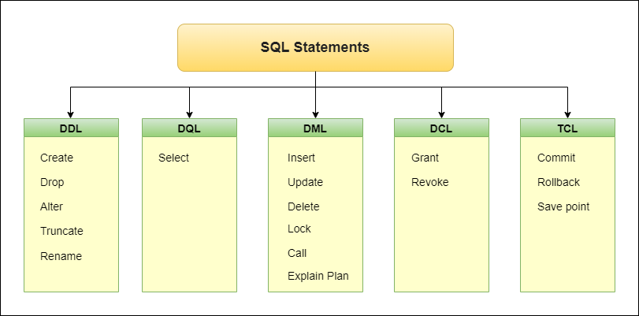
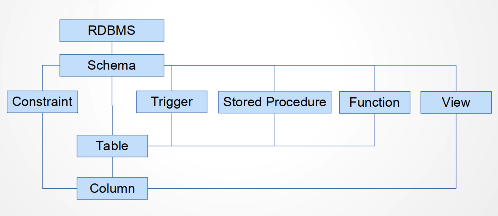
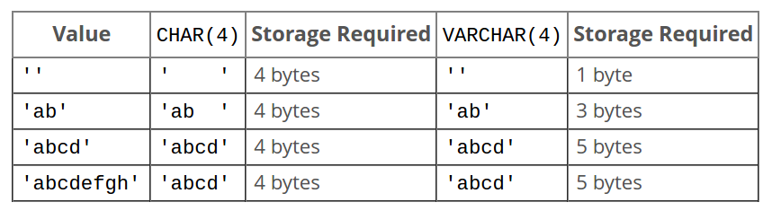

Keyboard shortcuts:
N/СпейсNext Slide
PPrevious Slide
OSlides Overview
ctrl+left clickZoom Element
If you want print version => add '
?print-pdf' at the end of slides URL (remove '#' fragment) and then print.
Like: https://wwwcourses.github.io/...CourseIntro.html?print-pdf
DDL. MySQL Data Types.
Created for
Created by
Introduction to SQL
Introduction to SQL
What is SQL?
- SQLStructuredQueryLanguage
- The standard language for relational database management systems.
- Not a procedural language(C, Java etc.).
- A declarative language!
- Tell with SQL what you want instead of telling the system how to get it.
SQL statements and queries
- SQL provides a set of commands (statements) you can use to query or manipulate the DB.
- SQL is case insensitive.
show databases;andSHOW DATABASES;are the same.- Database and table names are not case sensitive in Windows, but are case sensitive in most varieties of Unix or Linux.
desc mysql.user;will work butdesc mysql.USER;will return an error ((1146, "Table 'mysql.USER' doesn't exist")) on Linux/MacOS- Most RDBMS require a semicolon (';') to separate each SQL statement.
- As best practice, always put ';' after each SQL statement.
Example SQL statements
SELECT, UPDATE, DELETE
INSERT INTO, CREATE DATABASE, ALTER DATABASE
CREATE TABLE, ALTER TABLE, DROP TABLE
CREATE INDEX, DROP INDEX
SQL statements categories
- SQL statements are mainly categorized into next five categories:
- DDL - Data Definition Language
- DQL - Data Query Language
- DML - Data Manipulation Language
- DCL - Data Control Language
- TCL - Transaction Control Language
SQL statements categories - diagram
{kind=link}
Data Definition Language (DDL)
Data Definition Language (DDL)
Overview
- DDL is a set of SQL commands used to
create,modify, anddeletedatabase logical objects, but not data. - Logical structure model of RDBMS 
{kind=link}
Manage databases
Manage databases
Show databases
- Show all databases
- note, that only those databases for which the user have some kind of privilege (or if the user have the global SHOW DATABASES privilege) will be shown
SHOW DATABASES;
+--------------------+
| Database |
+--------------------+
| information_schema |
| mysql |
| performance_schema |
| sys |
+--------------------+
Create databases
- To create a database:
- Note, that if databases exists, an error will be thrown: (1007, "Can't create database 'test'; database exists"). To escape such error we can use:
CREATE DATABASE test;
CREATE DATABASE IF NOT EXISTS test;
Delete database
- To delete a database:
- Note, that if databases does not exists, an error will be thrown: (1008, "Can't drop database 'tmp'; database doesn't exist") . To escape such error we can use:
DROP DATABASE tmp;
DROP DATABASE IF EXISTS tmp;
Use Database
- To select a database to work with, we must use the USE statement
USE employees;
Import database (Setup Test Database)
- Download the test db and load it
- Employees Sample Database
- Install
- if you have git installed in your machine, just:
- Else, follow instructions: Installation of Employees Sample Database @dev.mysql
git clone https://github.com/datacharmer/test_db/
cd test.db
mysql -u root -p < employees.sql
Export (dump) DB to external sql file:
mysqldump -u username -p databasename > filename.sql
- Reference: mysqldump - A Database Backup Program
Manage Tables
MySQL Storage Engines
Overview
- Storage engines are MySQL components that handle the SQL operations for different table types.
- InnoDB is the default and most general-purpose storage engine, and Oracle recommends using it for tables except for specialized use cases.
- In MySQL 8.0 the The CREATE TABLE statement created InnoDB tables by default.
- Reference: storage-engines
SHOW ENGINES
What is a Transaction?
- A transaction is a logical unit of work that contains one or more SQL statements.
- A transaction is an atomic unit.
- The effects of all the SQL statements in a transaction can be either all committed (applied to the database) or all rolled back (undone from the database).
- Reference: Introduction to Transactions
CREATE TABLE
Syntax and Example
- Minimal syntax:
- Identifiers (i.e. tables, columns and other objects names) which contains special characters or is a reserved words must be quoted with backtick (`)
- if identifier contains only next symbols:
[0-9,a-z,A-Z$_] (basic Latin letters, digits 0-9, dollar, underscore)then we are not obliged to quote it. - Reference: CREATE TABLE Statement
CREATE TABLE table_name(
column_name1 data_type,
column_name2 data_type,
....
);
CREATE TABLE artist (
artist_id SMALLINT(5) NOT NULL DEFAULT 0,
fname VARCHAR(20) DEFAULT NULL,
lname VARCHAR(20) NOT NULL,
PRIMARY KEY (artist_id)
);
-- Query OK, 0 rows affected
- If table exists an error will be thrown!
- To prevent this error we can use
CREATE TABLE IF NOT EXISTS tbl_name
CREATE TABLE artist (
artist_id SMALLINT(5) NOT NULL DEFAULT 0,
fname VARCHAR(20) DEFAULT NULL,
lname VARCHAR(20) NOT NULL,
PRIMARY KEY (artist_id)
);
-- (1050, "Table 'artist' already exists")
CREATE TABLE IF NOT EXISTS artist (
artist_id SMALLINT(5) NOT NULL DEFAULT 0,
fname VARCHAR(20) DEFAULT NULL,
lname VARCHAR(20) NOT NULL,
PRIMARY KEY (artist_id)
);
-- Query OK, 0 rows affected
SHOW CREATE TABLE
- This allows us to see the create statement that MySQL engine had used
- It shows even the default options, which we did not state explicitly.
SHOW CREATE TABLE artist;
# to display wide results in vertical form we can use '\G' modifier instead of ';'
SHOW CREATE TABLE artist\G
Results in:
***************************[ 1. row ]***************************
Table | artist
Create Table | CREATE TABLE `artist` (
`artist_id` smallint(5) NOT NULL DEFAULT '0',
`fname` varchar(20) DEFAULT NULL,
`lname` varchar(20) NOT NULL,
PRIMARY KEY (`artist_id`)
) ENGINE=InnoDB DEFAULT CHARSET=latin1
DESC table
- To show the structure of a table:
DESC artist;
Results in:
+-----------+-------------+--------+-------+-----------+---------+
| Field | Type | Null | Key | Default | Extra |
|-----------+-------------+--------+-------+-----------+---------|
| artist_id | smallint(5) | NO | PRI | 0 | |
| fname | varchar(20) | YES | | <null> | |
| lname | varchar(20) | NO | | <null> | |
+-----------+-------------+--------+-------+-----------+---------+
- Remember, that we can list all tables in a DB with:
SHOW TABLES;
Results in:
+----------------------+
| Tables_in_music_db |
|----------------------|
| artist |
+----------------------+
DROP TABLE
Syntax
- To delete a table:
- If table do not exists, an error is thrown:
ERROR 1051 (42S02): Unknown table 'music_db.artist', but we can use:
DROP TABLE artist;
DROP TABLE IF EXISTS artist;
ALTER TABLE
Add column
ALTER TABLE table_name
ADD new_column_name column_definition
[ FIRST | AFTER column_name ]; # optional
ALTER TABLE artist
ADD birth_date TINYINT
AFTER lname;
Remove column
ALTER TABLE artist DROP birth_date;
TRUNCATE TABLE
- The TRUNCATE TABLE command deletes the data inside a table, but not the table itself.
- Let's insert some data into artist, in order to see how truncate works:
- Let's check:
- Now, let delete all data:
- Let's check now:
INSERT INTO artist (fname,lname) VALUES ('Robert', 'Smith');
SELECT * FROM artist;
+-----------+--------+-------+
| artist_id | fname | lname |
+-----------+--------+-------+
| 0 | Robert | Smith |
+-----------+--------+-------+
dt
TRUNCATE artist;
+-----------+-------+-------+
| artist_id | fname | lname |
+-----------+-------+-------+
+-----------+-------+-------+
0 rows in set
RENAME TABLE
- RENAME TABLE renames one or more tables
- Note, that we can rename a table with
ALTER TABLE, as well: - Reference: RENAME TABLE @dev.mysql
RENAME TABLE old_table TO new_table;
ALTER TABLE old_table RENAME new_table;
MySQL Data Types
Overview
- MySQL supports many SQL data types in several categories:
- numeric types
- string (character and byte) types
- date and time types
- spatial types
- JSON data type
- References:
- MySQL Data Types @w3schools
- MySQL Data Types @dev.mysql
Numeric Data Types
Numeric Data Types
Numeric Data Types - Overview
Integer Types - Overview
- SQL standard integer types:
- INTEGER (or INT)
- SMALLINT
- MySQL extension:
- TINYINT
- MEDIUMINT
- BIGINT
MySQL Integer Types - Comparison Table

Integer Types - Examples
Create datatypes table
CREATE TABLE IF NOT EXISTS datatypes_demo(
id INT unsigned not null auto_increment,
tinyint_data TINYINT default null,
smallint_data SMALLINT default null,
mediumint_data MEDIUMINT default null,
int_data INT default null,
bigint_data BIGINT default null,
PRIMARY KEY (id)
);
And now insnert some numeric data
INSERT INTO datatypes_demo (tinyint_data,smallint_data,mediumint_data,int_data,bigint_data )
VALUES (100, 20000, 3000000, 100000000, 10000000000000000 );
Integer Types - Out of range error
- If we try to insert a value which is out of the range of respective datatype, an error will be thrown:
- Remember, that TINYINT SIGNED can store values in range [-128:127]
INSERT INTO datatypes_demo (tinyint_data) VALUES (128);
--Out of range value for column 'tinyint_data' at row 1
Fixed-Point Type: DECIMAL
- The DECIMAL type store exact DECIMAL data values.
- These types are used when it is important to preserve exact precision, for example with monetary data.
- When declaring DECIMAL type we can specify the precision (X - number of digits) and scale (Y - number of decimals)
- Let's consider next example:
- Here, we specified that salary values can range from -9999.99 to 9999.99.
- Reference: Fixed-Point Types
col_name DECIMAL(X,Y)
salary DECIMAL(6,2)
DECIMAL - Example
- Let's add new DECIMAL column to our demo table:
- Now, let's insert some values:
ALTER TABLE datatypes_demo ADD decimal_data DECIMAL(6,2);
INSERT INTO datatypes_demo (decimal_data) VALUES (9999.99)
-- Query OK, 1 row affected
INSERT INTO datatypes_demo (decimal_data) VALUES (10000.99)
--(1264, "Out of range value for column 'decimal_data' at row 1")
Floating-Point Types: FLOAT, DOUBLE
- The FLOAT and DOUBLE types represent approximate numeric data values.
- MySQL uses 4 bytes for single-precision values and 8 bytes for double-precision values
- FLOAT - defines precision from 0 to 23 which results in a 4byte single-precision column
- FLOAT(p) - 4 bytes if 0 <= p <= 24, 8 bytes if 25 <= p <= 53
- DOUBLE - defines precision from 24 to 53 results in an 8 byte double-precision DOUBLE column
- MySQL permits a nonstandard syntax: FLOAT(M,D) or REAL(M,D) or DOUBLE PRECISION(M,D).
- (M,D) means than values can be stored with up to M digits in total, of which D digits may be after the decimal point. For example, a column defined as FLOAT(7,4) is displayed as -999.9999.
- MySQL performs rounding when storing floating-point values, so if you insert 999.00009 into a FLOAT(7,4) column, the approximate result is 999.0001.
- Reference: Floating-Point Types
Floating-Point Types - Example
ALTER TABLE `datatypes_demo` ADD COLUMN `float_data` FLOAT(6,2);
INSERT INTO `datatypes_demo`(`float_Data`) VALUES (9999.99);
-- OK, AffectedRows : 1
INSERT INTO `datatypes_demo`(`float_Data`) VALUES (9999.999);
-- Error: Out of range value for column 'float_data' at row 1
INSERT INTO `datatypes_demo`(`float_Data`) VALUES (9999.45678);
--OK, AffectedRows : 1
-- the value will be rounded to 9999.46
String Data Types
String Data Types
What is string?
- A string is a sequence of bytes or characters, enclosed within either single quote (') or double quote (") characters
- When comparing strings MySQL uses numeric character code values.
- Character code ordering is a function of the string collation.
- A collation is a set of rules for comparing characters in a character set
- Within a string, the backslash (\) symbol has a special meaning. The backslash followed by certain symbol is know as escape sequence
- MySQL recognise these Escape Sequences: Table 9.1 Special Character Escape Sequences
The CHAR Data Type
- CHAR(M)
- Can store fixed length strings.
- The length is specified by M (defaults to 1).
- The length can be any value from 0 to 255.
- If a value entered is with length < M, then
the string is right padded with spaces. - Examples:
- Defines that first_name column will contains 10 character strings.
CREATE TABLE user(
first_name CHAR(10)
);
The VARCHAR Data Type
- VARCHAR(M)
- Can store variable length strings.
- The length is specified by M - cannot by empty!
- The length can be any value from 0 to 65,535.
- VARCHAR values are stored as a 1-byte or 2-byte length prefix plus data. The length prefix indicates the number of bytes in the value. A column uses one length byte if values require no more than 255 bytes, two length bytes if values may require more than 255 bytes.
- Examples:
- Defines that short_notes column will contains 50000 character strings.
- The real size taken on disk will be 50000+2 bytes.
CREATE TABLE mybook(
short_notes VARCHAR(50000),
);
CHAR<->VARCHAR differences
BLOB and TEXT Data Types
- BLOBBinary Large OBject
- Stores large amounts of binary data, such as images, PDF or other types of files.
- BLOB values are treated as binary strings - they have no character set!
- TEXT
- TEXT values are treated as character strings - they have a character set!
- Reference: The BLOB and TEXT Types
ENUM
- ENUM (from ENUMeration)
- Defines a list of predefined values. Like: ('yes', 'no')
- The value entered must be selected from that list (or it can be NULL)
- The elements listed in the column specification are assigned index numbers, beginning with 1
- Pros:
- Compact data storage in situations where a column has a limited set of possible values.
- The strings you specify as input values are automatically encoded as numbers
- Reference: ENUM
Example
CREATE TABLE user(
name VARCHAR(15),
smoker ENUM('yes','no')
);
Date and Time Types
Date and Time Types
Overview
MySQL supports various datetime types
|
DATETIME
|
YYYY-MM-DD HH:MM:SS
|
|
DATE
|
YYYY-MM-DD
|
|
TIMESTAMP
|
YYYYMMDDHHSSMM
|
|
TIME
|
HH:MM:SS
|
|
YEAR
|
YYYY
|
The DATE Data Type
- A date in YYYY-MM-DD format
- Values range: between 1000-01-01 and 9999-12-31.
- A date can be entered in several formats.
'YYYY-MM-DD'or'YY-MM-DD', like '2016-03-28' or '16-03-28'- Any punctuation character may be used as the delimiter between date parts.
- '2016/03/28' or '16/03/28'
CREATE TABLE datetimeDemos(
dateDemo DATE
);
INSERT INTO datetimeDemos (dateDemo) VALUES ('2022-12-31');
-- OK
INSERT INTO datetimeDemos (dateDemo) VALUES ('2022.12.31');
-- OK
INSERT INTO datetimeDemos (dateDemo) VALUES ('2022-30-31');
-- ERROR: Incorrect date value: '2022-30-31' for column 'dateDemo'
The DATETIME Date Type
- A date and time in YYYY-MM-DD HH:MM:SS format
- Values range: between 1000-01-01 00:00:00 and 9999-12-31 23:59:59.
- A DATETIME can be entered in several formats.
'YYYY-MM-DD HH:MM:SS'or'YY-MM-DD HH:MM:SS', like '2016-03-28 09:54:10' or '16-03-28 09:54:10'- Any punctuation character may be used as the delimiter between date parts.
- '2016/03/28 09.54.10' or '16/03/28 09.54.10'
- The date and time parts can be separated by T rather than a space.
- '2016-03-28 09:54:10' and '2016-03-28T09:54:10' are equivalent.
The TIMESTAMP Date Type
- A date and time in YYYY-MM-DD HH:MM:SS format
- Values range: between 1970-01-01 00:00:01 UTC and 2038-01-19 03:14:07 UTC.
- A TIMESTAMP value can be inserted in MYSQL the same way as a DATETIME value.
- MySQL converts TIMESTAMP values from the current time zone to UTC for storage, and back from UTC to the current time zone for retrieval
- This behavior doesn’t occur for DATETIME stored values.
- By default, the current time zone for each connection is the server time.
- When to use
DATETIME: - if you want to serve your date and time data the same way regardless of timezones
- When to use
TIMESTAMP: - when you want to serve the data on a per-timezone basis
Example
CREATE TABLE datetimeDemos(
dt DATETIME,
ts TIMESTAMP
);
INSERT INTO `datetimeDemos`
VALUES ('2022-12-31 12:50:55', '2022-12-31 12:50:55');
SELECT * FROM datetimeDemos;
+---------------------+---------------------+
| dt | ts |
+---------------------+---------------------+
| 2022-12-31 12:50:55 | 2022-12-31 12:50:55 |
+---------------------+---------------------+
The TIME Date Type
- A time in HH:MM:SS format
- Values range: between -838:59:59 UTC and 838:59:59 UTC.
- Can represent a time, or time interval.
- Can be inserted As a string in 'D HH:MM:SS' format. You can also use one of the following “relaxed” syntax: 'HH:MM:SS', 'HH:MM', 'D HH:MM', 'D HH', or 'SS'. Here D represents days and can have a value from 0 to 34.
Reference
These slides are based on
customised version of
framework